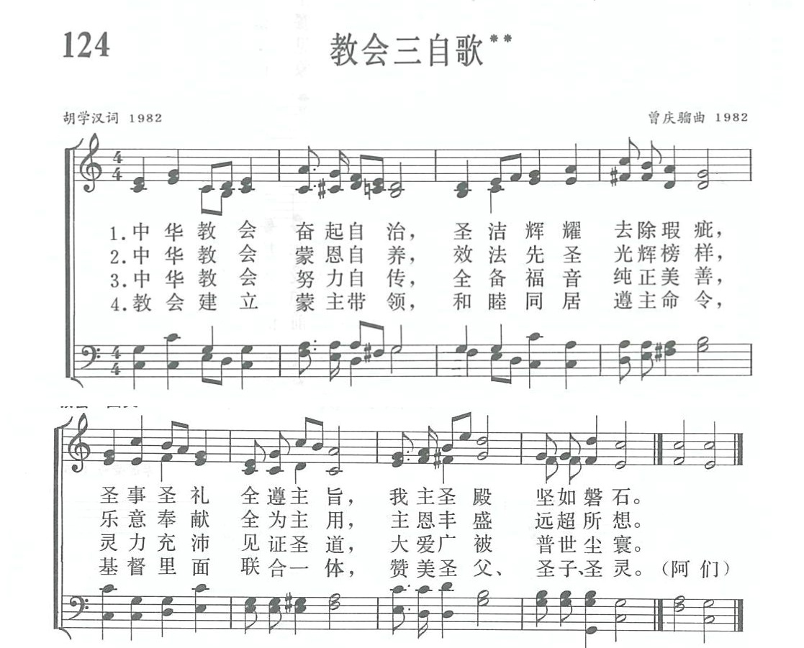

|
|
讚美詩(新編) |
|
|
|
|
https://www.zanmeishige.com/tab/13797.html?songbook=1&index=124
 |
|
|
|
|

讚美詩(新編) 第124首《教會三自歌》https://youtu.be/LZjwdarJtfU
第124首 教会三自歌** _胡学汉 Self-gov’ning our church endeavours forSelf-gov’ning our church endeavours for
经文：“要用水藉着道把教会洗净，成为圣洁”(弗5：26)。
我国教会实行自治、自养、自传。不仅是新中国成立以后，三自爱国运动所提出的要求，也反映了老一代中国基督徒多少年的祈求与向往。这一点从本诗的词作者胡学汉牧师的经历上也能得到证实。
胡学汉是湖北沔阳人，19O6年生，1926年毕业于武昌博文中学，先在循道公会湖北教区内任教士(即传道)，193O年入武昌华中神学院，1933年毕业。1937年他被按立为牧师，曾在钟祥、随州、汉口、沔阳、武昌、硚口等联区任联区长，1953年被选为中华基督教循道公会湖北教区副主席，还曾担任华中协和神学院董事长，汉口圣教书会出版委员会主席。十年动乱以后，他于1985年任中南神学院副院长，因年迈，1986年后任湖北省基督教协会及武汉市基督教协会的顾问。
胡学汉回忆他的传道生涯，曾经谈到：“193O年汉口联区从赖养联区(按：指经济依赖我国差会的教会)被划为自养联区(按：指经济由中国信徒自行负担的教会)，但人事权和经济权等仍操于英国差会之手。抗日战争爆发后，信徒转移到大后方，经济无着，只有仍靠英国差会津贴。所谓汉口自养联区徒有其名。正如俗话说，‘钱在哪里，权也在那里。那时我想，湖北全教区不知何日能实现自养、自治、自传?”。
正因为他一向关心中国教会自立的问题，祖国的解放为他和其他教会先辈带来了新的希望。195O年他曾与广州的熊真沛牧师一起，代表循道公会发表谈话，明确表示中国基督徒应有反帝爱国的态度，脱离西方差会的控制。当时，循道公会湖北教区主席肖国贵牧师是三自革新宣言四十位发起人之一，胡学汉也是第一批宣言签名者。
1981年当他看到《天风》上征求创作诗歌的启事时，在祈祷中心有所感，于是写了初稿，拿到汉口荣光堂诸位同工面前，请求修正润色，当时没有得到特别的鼓励。他困惑极了，回到家中再祈祷，想到的是：不管录用与否，只要效忠于主，对于教会走三自道路表示支持，决心继续努力。靠神所赐的恩典，他终于完成夙愿，当时胡学汉已76岁。
诗写成后，没有人谱曲。他又为此事祈祷多次，终于在荣光堂找到唱诗班的指挥曾庆骝同道，二人合作，投稿后被录用。
曾庆骝是广东顺德县人，1915年生于基督教家庭。他在武昌文华中学读书时，曾加入该校的铜管乐队，抗战时期还曾参加武汉合唱团到新加坡、马来西亚，在爱国侨胞陈嘉庚先生的领导下，进行抗日救亡宣传工作。194O年他在香港受洗。解放后，他进中南人民艺术剧院当演奏员，并在音乐资料室工作，至1975年退休。汉口荣光堂复堂后，他曾任堂委、义工，1981年至1982年，在该堂唱诗班内协助指挥工作。胡牧师请他谱曲时，他想到圣乐与一般歌曲不一样，起初不敢动笔，后来想到赞美诗中由中国人写的不多，解放后的中国基督教是以三自的崭新面貌出现的，这首诗意义重大，便求主赐他智慧，终于执笔写成。
这首诗词的前三节分别述说自治、自养、自传的意义，落实在建设教会，乐意奉献，见证圣道等具体事工之中；第四节归结于和睦同居，联合一体，同心赞美三位一体的神。曲调是稳重的，向上的，说明我国教会正在向前迈进。
胡学汉于1991年8月19日离世，曾庆骝于1990年8月20日归天。